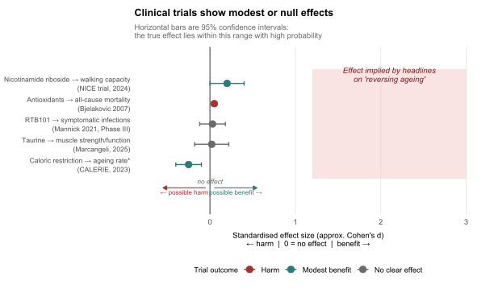

Code
library(ggplot2)
palette_book <- c("harm" = "#a83232",
"null" = "#6b6b6b",
"modest benefit" = "#2c7a7a")
# ── 1. Data ordered from smallest to largest effect ─────────────────────────
d <- data.frame(
label = c(
"Antioxidants → all-cause mortality\n(Bjelakovic 2007)",
"RTB101 → symptomatic infections\n(Mannick 2021, Phase III)",
"Nicotinamide riboside → walking capacity\n(NICE trial, 2024)",
"Caloric restriction → ageing rate*\n(CALERIE, 2023)",
"Taurine → muscle strength/function\n(Marcangeli, 2025)"
),
effect = c( 0.05, 0.03, 0.20, -0.25, 0.02),
lower = c( 0.02, -0.12, 0.00, -0.40, -0.18),
upper = c( 0.08, 0.18, 0.40, -0.10, 0.22),
direction = c("harm", "null", "modest benefit", "modest benefit", "null"),
stringsAsFactors = FALSE
)
# ── 2. Reorder by effect ─────────────────────────────────────────────────────
d <- d[order(d$effect), ]
# ── 3. Build numeric positions OUTSIDE the data frame ───────────────────────
n <- nrow(d)
pos_vals <- seq_len(n)
lbl_vals <- setNames(d$label, pos_vals)
d$ypos <- pos_vals
# ── 4. Plot ──────────────────────────────────────────────────────────────────
ggplot(d, aes(x = effect, y = ypos, colour = direction)) +
# Headlines band
annotate("rect",
xmin = 1.2, xmax = 3.0, ymin = 0.3, ymax = n + 0.7,
fill = "#f4c8c8", alpha = 0.5) +
annotate("text",
x = 2.1, y = n + 0.45,
label = "Effect implied by headlines\non 'reversing ageing'",
colour = "#7a1a1a", fontface = "italic",
size = 3.4, hjust = 0.5, lineheight = 0.95) +
# Reference line (no effect)
geom_vline(xintercept = 0, colour = "grey40", linewidth = 0.6, linetype = "solid") +
annotate("text",
x = 0, y = 0.05,
label = "no effect", colour = "grey40",
size = 2.9, hjust = 0.5, vjust = 0, fontface = "italic") +
# Directional arrows
annotate("segment",
x = 0.05, xend = 0.55, y = -0.15, yend = -0.15,
arrow = arrow(length = unit(0.18, "cm"), type = "closed"),
colour = "#2c7a7a", linewidth = 0.5) +
annotate("text", x = 0.30, y = -0.35,
label = "possible benefit →", colour = "#2c7a7a", size = 2.8, hjust = 0.5) +
annotate("segment",
x = -0.05, xend = -0.55, y = -0.15, yend = -0.15,
arrow = arrow(length = unit(0.18, "cm"), type = "closed"),
colour = "#a83232", linewidth = 0.5) +
annotate("text", x = -0.30, y = -0.35,
label = "← possible harm", colour = "#a83232", size = 2.8, hjust = 0.5) +
# 95% CIs and points
geom_errorbarh(aes(xmin = lower, xmax = upper),
height = 0.22, linewidth = 0.65) +
geom_point(size = 3.6) +
scale_colour_manual(values = palette_book,
labels = c("harm" = "Harm",
"null" = "No clear effect",
"modest benefit" = "Modest benefit")) +
scale_y_continuous(
breaks = pos_vals,
labels = lbl_vals,
expand = expansion(add = 1.1)
) +
coord_cartesian(xlim = c(-0.70, 3.00), clip = "off") +
labs(
title = "Clinical trials show modest or null effects",
subtitle = "Horizontal bars are 95% confidence intervals:\nthe true effect lies within this range with high probability",
x = "Standardised effect size (approx. Cohen's d)\n← harm | 0 = no effect | benefit →",
y = NULL,
colour = "Trial outcome"
) +
theme_minimal(base_size = 11.5) +
theme(
plot.title = element_text(face = "bold", size = 12.5),
plot.subtitle = element_text(size = 9.5, colour = "grey40", margin = margin(b = 8)),
panel.grid.major.y = element_blank(),
panel.grid.minor = element_blank(),
legend.position = "bottom",
legend.title = element_text(size = 9),
axis.text.y = element_text(size = 8.5, lineheight = 1.1),
axis.title.x = element_text(size = 9.5, margin = margin(t = 6)),
plot.margin = margin(t = 10, r = 15, b = 25, l = 5)
)